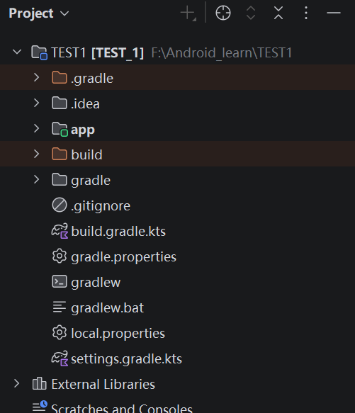
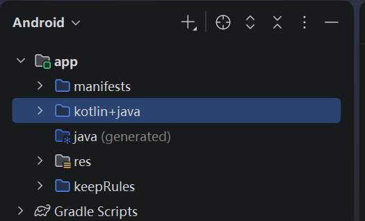
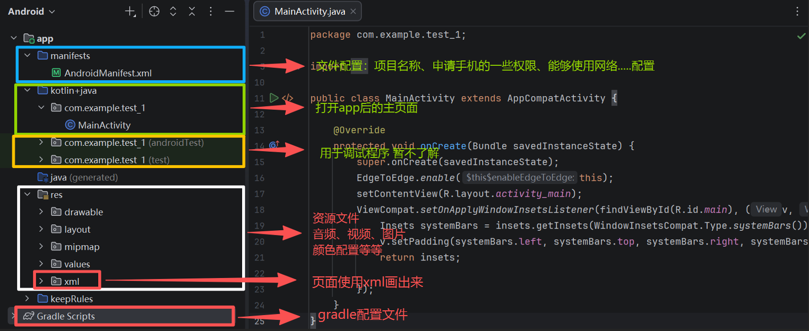

Android studio提供两种视图方式
项目视图、安卓视图


project是设备中真实的项目结构 Android是更加清晰的内容展示
Android视图

Project视图、
Android 项目目录结构
│
├─ .gradle/ # Gradle 自动生成的缓存目录，一般不用手动修改
├─ .idea/ # Android Studio 的项目配置目录，一般不用手动修改
│
├─ app/ # app 模块，Android 开发最主要的工作目录
│ │
│ ├─ build/ # 编译生成的文件，可删除，重新编译后会自动生成
│ │
│ ├─ libs/ # 本地依赖库，例如 .jar / .aar 文件
│ │
│ ├─ src/ # 源代码目录，非常重要
│ │ │
│ │ ├─ main/ # APP 主程序代码
│ │ │ │
│ │ │ ├─ java/ # Java / Kotlin 源代码
│ │ │ │ └─ com.example.xxx/
│ │ │ │ └─ MainActivity.java
│ │ │ │
│ │ │ ├─ res/ # Android 资源目录
│ │ │ │ │
│ │ │ │ ├─ drawable/ # 图片、Shape、Vector Drawable 等资源
│ │ │ │ │
│ │ │ │ ├─ layout/ # XML 页面布局文件
│ │ │ │ │ └─ activity_main.xml
│ │ │ │ │
│ │ │ │ ├─ mipmap-mdpi/ # mdpi 启动器图标
│ │ │ │ ├─ mipmap-hdpi/ # hdpi 启动器图标
│ │ │ │ ├─ mipmap-xhdpi/ # xhdpi 启动器图标
│ │ │ │ ├─ mipmap-xxhdpi/ # xxhdpi 启动器图标
│ │ │ │ ├─ mipmap-xxxhdpi/ # xxxhdpi 启动器图标
│ │ │ │ ├─ mipmap-anydpi-v26/ # 自适应启动器图标
│ │ │ │ │
│ │ │ │ ├─ values/ # 字符串、颜色、主题等配置
│ │ │ │ │ ├─ strings.xml
│ │ │ │ │ ├─ colors.xml
│ │ │ │ │ └─ themes.xml
│ │ │ │ │
│ │ │ │ └─ xml/ # 其他 XML 配置文件
│ │ │ │
│ │ │ └─ AndroidManifest.xml # APP 清单配置文件
│ │ │ # 配置组件、权限、应用信息等
│ │ │
│ │ ├─ androidTest/ # Android 设备/模拟器测试代码
│ │ └─ test/ # 本地单元测试代码
│ │
│ ├─ .gitignore # app 模块 Git 忽略配置
│ ├─ build.gradle.kts # app 模块的 Gradle 构建配置，非常重要
│ └─ proguard-rules.pro # R8 / 代码压缩混淆相关规则
│
├─ gradle/
│ └─ wrapper/
│ ├─ gradle-wrapper.jar
│ └─ gradle-wrapper.properties # Gradle Wrapper 版本配置
│
├─ .gitignore # 整个项目的 Git 忽略配置
├─ build.gradle.kts # 项目级 Gradle 构建配置
├─ settings.gradle.kts # 项目与模块配置
├─ gradle.properties # Gradle 全局项目配置
├─ gradlew # Linux / macOS Gradle Wrapper
├─ gradlew.bat # Windows Gradle Wrapper
└─ local.properties # 本机环境配置，例如 Android SDK 路径